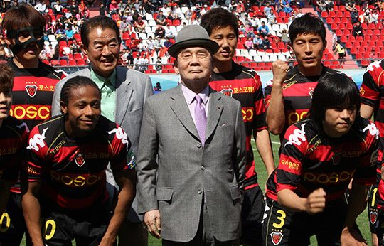
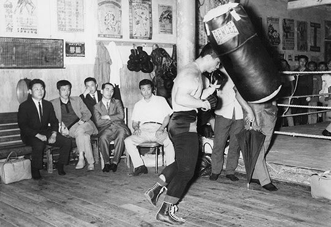
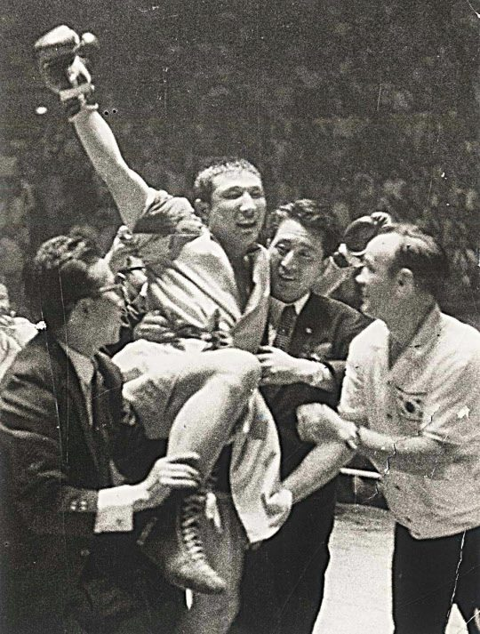
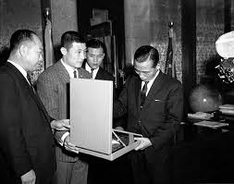

보도일 2014-10-22출처 조선일보 프리미엄조선 연재
미국 코퍼스사(社) 대표 포이를 비롯한 서방 몇 개국의 철강업계 백인 기업가들과 한국정부의 경제부처 관료들이 한국에 종합제철소를 건설하기 위한 문제를 놓고 기본적인 교감을 나누는 수준의 교섭을 벌이고 있던 1965년 가을 어느 날이었다. 박정희가 박태준을 청와대로 불렀다. 대한중석은 이미 정상 궤도에 올라서 있었다.
“우리나라에 동양챔피언 있는 거 알아?”
박정희가 뜬금없이 물었다.
“무슨 챔피언 말씀입니까?”
“김기수란 친구가 있어. 물건이야. 이게 굉장히 세다는데.”
훅 먹이는 시늉을 해보인 박정희가 멋쩍게 웃었다.
“그쪽 방면에는 별 소질이 없습니다. 축구단을 집중적으로 키울 생각입니다.”
박태준도 미소를 머금었다.
“대한중석이 축구단도 키워봐.”
“저는 청소년시절을 일본에서 보낸 영향인지 개인적으로 축구보다 야구를 더 좋아했습니다만, 우리 국민이 가장 좋아하는 스포츠가 축구고 우리가 일본을 이기는 스포츠가 축구이기 때문에 우선순위를 바꿔버렸습니다.”
두 사람은 가벼운 웃음을 나눴다.
대한중석 사장 박태준의 ‘축구 키우기’에는 그 시절의 국가대표급 선수들 사이에 널리 알려졌던 일화가 있다. 상동광산을 찾아간 박태준이 우연히 낯익은 광부들을 보았다. 축구 국가대표 선수 함흥철, 김정석, 조윤옥 등이었다. 국가대표팀 감독인 한흥기도 보였다. 그는 사정을 알아봤다. 축구단 운영에 연간 1억원쯤 쓰기 때문에 선수들을 평소엔 광부로 부려먹다가 시합 일정에 맞춰서 합숙훈련을 시킨다는 것. 대우도 형편없었다. 그는 부아가 치밀어서 불호령을 내렸다.
“이건 절약이 아니다. 낭비 중의 낭비다. 당장 선수들을 서울로 올려 보내고, 축구단 육성방안을 마련해서 보고해!”
이래서 대한중석 축구단은 ‘번듯한 실업축구단’으로 거듭나게 되었다. 석효길, 황종현 등 당대의 최고 기량 선수들이 대한중석에 모여들었다. 대한중석 축구단은 뒷날에 포항제철 축구단 창단으로 계승되고, 포항제철 축구단은 포스코의 프로축구단인 포항스틸러스와 전남드레곤즈(광양)로 발전한다. 한국 축구의 스트라이커 계보를 형성한 이회택, 최순호, 황선홍, 이동국 등이 포스코 축구단에서 활약하며 성장했다. 홍명보도 그러했다.
현역으로 뛰고 있는 이동국은 요즘도 서울 동작동 현충원의 ‘박태준 묘소’ 앞에 꽃을 놓는다. 2002년 한일월드컵을 유치할 때 우리 측은 한국에 온 실사단을 포항으로 데려가야 했다. 그때만 해도 국내 유일의 국제규격 축구전용구장이 포항제철이 소유한, 박태준이 직접 만든 포항스틸러스 구장 밖에 없었던 것이다.

대한중석 축구단이 한국에서 이름을 휘날리던 1966년, 한국 축구계에 거의 안보 차원의 비상이 걸린 적이 있었다. 북한이 런던월드컵대회에서 8강에 오르는 쾌거를 세웠던 것이다. 이탈리아를 꺾고 8강에 올라 포르투갈과 맞붙어 전반전을 압도했으나 후반전에 체력이 딸려 분루를 삼켜야 했던 북한 축구대표팀. 이 소식에 오금이 저렸던 중앙정보부장(김형욱)이 부랴부랴 ‘양지팀’을 급조했다. 대한중석도 선수 차출을 당했다. 북한과 극단적 체제대결을 벌이고 있던 시절의 해프닝이었다.
1965년 가을에 박정희가 박태준을 청와대로 불러 ‘챔피언’을 언급한 것은 통치적 차원의 판단이었다.
“우리나라에도 세계챔피언이 나와야지. 지금 우리 국민에게는 우리 민족이 뭐든 우수하다는 자신감이 절대적으로 필요한 때야. 국민사기진작을 위해서도 세계챔피언이 나와야 해.”
“대한중석에 그만한 여유는 충분합니다. 한 번 해보겠습니다.”
동양챔피언인 프로복서 김기수를 세계챔피언으로 만들기 위한 통치적 프로젝트, 박정희와 박태준이 합작하여 한국 최초로 세계 최고를 탄생시키기 위한 프로젝트는 그렇게 첫발을 내디디게 되었다.
‘헝그리 복서’란 말이 회자되는 시절, 말 그대로 배고픈 권투선수. 오늘의 상처와 내일의 골병을 감내하겠다는 각오로 나서야 하는 프로복서의 길. 열 명 태어나면 여덟 명은 출생기념으로 빈곤의 굴레를 짊어졌던 1960년대 한국에는 주먹께나 쓰는 배고픈 소년들이 더러 챔피언을 꿈꾸었다. 김기수도 마찬가지였다.
박태준은 곧장 김기수를 찾았다. 주니어미들급이라는데, 과연 체구 좋은 사내가 대한중석 사장실에 나타났다. 악수를 나누었다. 아주 크고 빳빳한 손이었다.
“어디 출신인가?”
“함흥에서 내려왔습니다.”
“함경도 아바이구나. 1‧4후퇴 때?”
“예, 흥남에서 배를 탔습니다.”
김기수는 1‧4후퇴 때 배를 타고 내려오다가 강릉, 포항에서 못 내리고 여수까지 가게 되었다고 했다.
“복싱은 언제 배웠나?”
“여수 여항중학교에서 시작했습니다.”
박태준의 가슴으로 묘한 기운이 번지고 있었다. 1‧4후퇴, 함흥, 흥남……. 이런 단어들이 김기수에 대한 관심을 더 자극했다. 1950년 겨울의 박태준은 원산, 함흥, 성진을 거쳐 청진까지 북진했다가 1‧4후퇴를 앞두고 맹장수술을 받은 환자 상태로 들 것에 실려 흥남에서 통한의 철수 길에 올라야 했던 청년장교였으니…….

“지금 너의 상대가 어떤 놈이야?”
“이탈리아의 니노 벤베누티라는 놈입니다.”
“그런 놈이 있어? 자신 있나?”
“한 6개월 연습에 전념한다면, 얼마든지 붙어볼 자신 있습니다.”
박태준은 김기수에게 필요한 것을 다 말하라고 했다. 김기수는 무엇보다 도장이 급하다고 했다.
“집이 어디냐?”
“경희대 근처입니다.”
박태준은 총무이사를 불렀다.
“이 친구의 집과 가까운 곳에다 가장 빠른 시일 안에 좋은 권투도장을 지어주시오.”
일은 신속하게 진행되었다. 며칠 뒤 신설동에 터를 잡고 바로 공사에 돌입했다. 근사한 권투체육관이 생겼다.
개관식을 앞두고 박태준에게 ‘작명 의뢰’가 들어왔다. 그는 전혀 고민하지 않았다. 박정희가 바라고 자신이 추구하는 세계 일류. 그래서 ‘권일(拳一)’을 선물했다. ‘주먹으로 세계 일등이 되라’는 기원이었다.
챔피언 니노 벤베누티와 도전자 김기수의 타이틀매치 일정이 잡혔다. 박태준은 일부러 짬을 내서 ‘권일 체육관’으로 찾아가 김기수의 훈련 모습을 지켜보고 금일봉을 건네며 격려를 아끼지 않았다.
결말이 좋아야 했다. 무슨 내기를 하듯 국가 장래에 대한 운을 걸어둔 것은 전혀 아니지만 그래도 성공을 해야 국민과 함께 한바탕 즐기면서 아침에 까치 소리를 듣는 것 같은 기분을 맛볼 것이었다. 아니, 거창한 차원은 다 접어둔다 하더라도 월남한 몸으로 곤궁하게 살아온 김기수 개인에게 얼마나 큰 영광이고 보람이겠는가.
주니어미들급 WBA세계타이틀매치는 1966년 6월 25일, 전쟁 16주년 저녁에 장충체육관에서 열렸다. 국민적 관심이 집중되었다. 박정희도, 박태준도 관전했다. 엇비슷하게 맞고 때리는 예측불허의 승부. 대통령 앞의 큰 재떨이에 꽁초가 수북해졌다.
밤 10시가 넘어 15회전이 끝났다. 한국 심판은 ‘김기수 승’, 이탈리아 심판은 ‘벤베누티 승’을 알렸다. 라디오에 귀를 대고 있는 모든 국민이 초조했다. 코쟁이 주심이 ‘김기수 승’을 내놨다. 까짓, 텃세가 좀 붙었으면 어떤가. 박태준은 아낌없는 박수를 보냈다. 한국 최초의 세계챔피언 탄생. 온 국민이 마치 오랜 가뭄 끝에 한바탕 소나기가 내리는 것처럼 신명을 올렸다.

이튿날 김기수 내외가 북아현동 박태준의 집으로 인사를 왔다. 갓 탄생한 세계 챔프의 얼굴은 군데군데 시퍼렇게 멍들어 있었다.
“사장님 덕분에 운동에만 전념한 결과입니다. 정말 감사합니다.”
“아니야. 우리 챔피언이 고맙고 장해. 지금 우리 국민들에게 누가 그만큼 큰 기쁨을 줄 수 있겠나. 권일체육관은 선물이야. 대통령 각하와 내가 주는 거라고 생각해.”
김기수 내외가 다소곳이 고개를 수그렸다.
